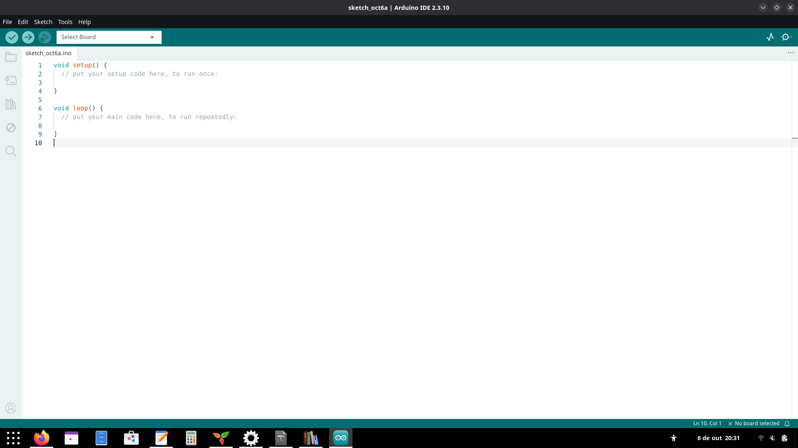
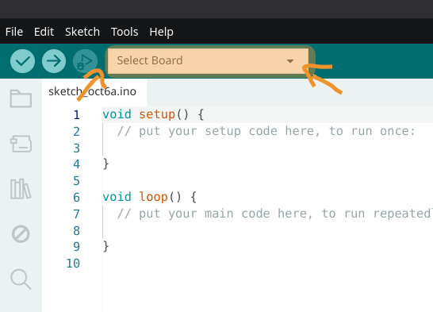
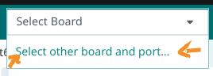
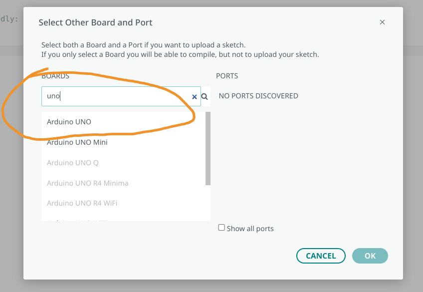
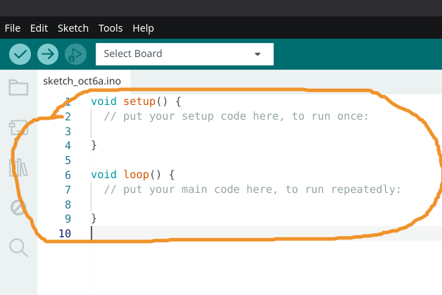
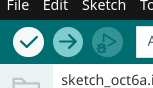
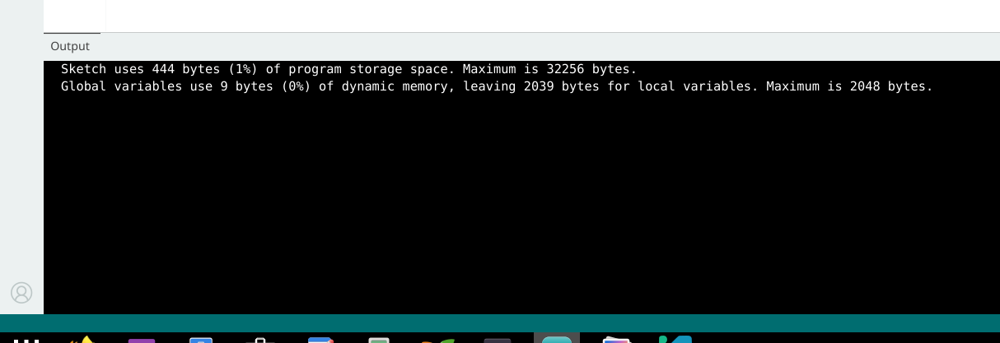
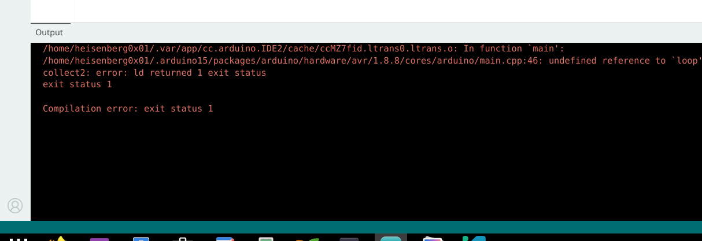
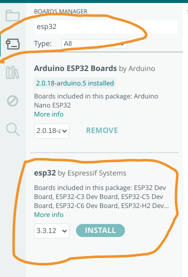
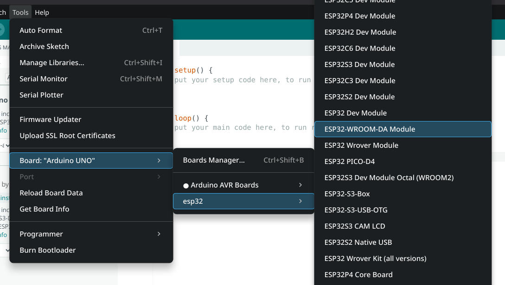

Conceitos de apoio
Antes ou durante a prática, consulte estes materiais quando precisar compreender um termo ou revisar a função de uma ferramenta.
Sketch, setup() e loop()
Estrutura básica de um programa para Arduino.
Compilação e mensagens de erro
Como o código é traduzido e por que os erros aparecem.
Upload para a placa
Diferença entre verificar e gravar o programa.
USB, porta e driver
Como o computador reconhece e se comunica com a placa.
Pacote de placa
Arquivos necessários para compilar e enviar códigos ao ESP32.
Monitor Serial
Envio de textos, valores e mensagens entre placa e computador.
Instale a Arduino IDE
A Arduino IDE é o programa usado para escrever, verificar e enviar códigos para placas como o Arduino Uno e o ESP32. Ela também apresenta mensagens de compilação e ferramentas de comunicação serial.
Baixe a versão adequada ao seu sistema operacional na página oficial. Depois, execute o instalador e conclua a instalação normalmente.
Conheça a interface
Ao abrir o programa, você verá a barra de ferramentas, o seletor de placa, o editor de código e o painel de saída. É nessa janela que todo o processo será realizado.

Selecione o Arduino Uno
Conecte o Arduino Uno ao computador com um cabo USB de dados. Na parte superior da IDE, clique no seletor de placas.

No menu que aparecer, escolha Select other board and port….

Digite uno no campo de pesquisa, selecione Arduino UNO e confirme. Se uma porta estiver disponível, selecione também a porta correspondente à placa.

Verifique um código correto
Apague o conteúdo do editor, copie o código abaixo e cole na Arduino IDE. Este programa faz o LED integrado da placa piscar.
const int pinoLed = LED_BUILTIN;
void setup() {
pinMode(pinoLed, OUTPUT);
}
void loop() {
digitalWrite(pinoLed, HIGH);
delay(1000);
digitalWrite(pinoLed, LOW);
delay(1000);
}
Clique no botão com o símbolo ✓. Esse comando verifica a sintaxe e compila o programa, mas ainda não envia o código para a placa.

Quando a compilação termina corretamente, o painel de saída informa o uso de memória e não apresenta uma mensagem de erro.

Provoque e investigue um erro
Agora copie o código abaixo. A variável intervalo deveria guardar um número, mas recebeu um texto. O erro é proposital.
const int pinoLed = LED_BUILTIN;
int intervalo = "mil";
void setup() {
pinMode(pinoLed, OUTPUT);
}
void loop() {
digitalWrite(pinoLed, HIGH);
delay(intervalo);
digitalWrite(pinoLed, LOW);
delay(intervalo);
}Clique em ✓. A IDE deverá interromper a compilação e destacar o problema no painel de saída.

Sua investigação: copie o código completo e a mensagem completa do painel de saída. Antes de alterar o programa, observe a linha indicada e tente explicar o problema com suas palavras.
Se ainda não conseguir corrigir, envie ao ChatGPT uma mensagem como esta:
Estou programando um Arduino Uno. Abaixo estão o meu código completo e a mensagem completa apresentada pela Arduino IDE. Identifique o problema, explique por que ele acontece e indique a menor correção possível.
Código: [cole aqui]
Mensagem de erro: [cole aqui]
Analise a explicação recebida, faça a correção e verifique novamente. Não aceite apenas um código pronto: registre qual era o erro e por que a mudança resolveu o problema.
Instale e selecione o ESP32
O suporte ao ESP32 precisa ser instalado na Arduino IDE. Abra o Gerenciador de Placas, pesquise por esp32 e instale esp32 by Espressif Systems.

Depois da instalação, abra o menu de placas e selecione ESP32 WROOM-DA Module, conforme a placa usada nesta prática.

Código correto para o ESP32
Copie o programa, verifique e depois envie para a placa com o botão de upload.
const int pinoLed = 2;
void setup() {
pinMode(pinoLed, OUTPUT);
}
void loop() {
digitalWrite(pinoLed, HIGH);
delay(500);
digitalWrite(pinoLed, LOW);
delay(500);
}Erro proposital no ESP32
Neste segundo programa, a variável que deveria guardar o número do pino recebeu um texto.
int pinoLed = "2";
void setup() {
pinMode(pinoLed, OUTPUT);
}
void loop() {
digitalWrite(pinoLed, HIGH);
delay(500);
digitalWrite(pinoLed, LOW);
delay(500);
}- Verifique o código.
- Copie a mensagem completa apresentada pela IDE.
- Tente localizar sozinho a linha e o valor incorreto.
- Se necessário, envie o código e a mensagem ao ChatGPT.
- Explique a correção antes de aplicá-la.
- Verifique novamente e faça o upload para o ESP32.
Comunicação e Monitor Serial
O Monitor Serial permite acompanhar textos e valores enviados pela placa, sendo útil para verificar o funcionamento do programa e investigar problemas. Nesta prática, o estudo dessa ferramenta será feito com o vídeo de apoio.
Vídeos de apoio
Use o primeiro vídeo para acompanhar o Monitor Serial. Os demais são materiais complementares em português para rever a instalação, a configuração da IDE e o suporte ao ESP32.

Marcia Ferreira Cristaldo

ES Developer

Lobo da Robótica
Depois de assistir: abra o Monitor Serial na sua IDE, confira a velocidade configurada e reproduza um exemplo que use Serial.begin() e Serial.println().
Ao terminar, confirme se você consegue
- selecionar uma placa e uma porta na Arduino IDE;
- diferenciar verificar o código de fazer upload;
- localizar o painel de saída e reconhecer uma compilação com erro;
- enviar ao ChatGPT o código e a mensagem completa, sem ocultar o contexto;
- instalar o pacote do ESP32 e selecionar ESP32 WROOM-DA Module;
- abrir o Monitor Serial e interpretar as mensagens enviadas pela placa.